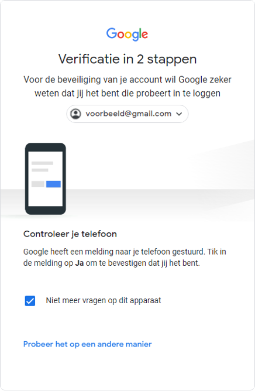

Inleiding
Digitale technologie heeft veel invloed op de wijze waarop we ons leven vormgeven. Digitale technologie geeft mogelijkheden om te werken, te ontspannen of om contact met elkaar te hebben.
Iedereen die digitale technologie gebruikt heeft zijn eigen digitale identiteit. Die digitale gegevens kunt u vinden op bijvoorbeeld uw TikTok- of Instagram account. Zelfs op magister of somtoday zijn plekken waar u uw digitale gegevens kunt vinden.
Digitale gegevens moeten vaak privé blijven, daarom is er digitale beveiliging . Digitale beveiliging is een overkoepelende term voor alle manieren waarop u uw eigen digitale identiteit kan beschermen.
Het beveiligen van onze digitale gegeven gaat voornamelijk over de volgende 3 aspecten:
- vertrouwelijkheid: de afscherming van gegevens tegen ongeoorloofde inzage.
- integriteit: bescherming van gegevens tegen verlies of (on)bedoelde wijzigingen.
- beschikbaarheid. de mate van storingsvrije toegang tot de gegevens.
Vertrouwelijkheid
Om toegang te krijgen tot persoonlijke gegevens is er een controle nodig. Dat proces heet authenticatie . Er zijn verschillende vormen van authenticatie zoals:
- iets wat u weet dus uw wachtwoord of pincode
- iets wat u hebt dus uw sleutel of pas
- iets wat u bent. dus uw vingerafdruk of iris patroon
Ook kan er identificatie of verificatie worden gebruikt. Bij identificatie gaat het om “wie bent u?". Bij verificatie gaat het om 'bent u wie u zegt dat u bent‘.
Het veiligste is het combineren van 2 vormen van authenticatie met elkaar te combineren. Een voorbeeld daarvan is uw pinpas en uw pincode (wat u hebt en wat u weet)

Een techniek die verwant is aan authenticatie, identificatie en verificatie is screening . Bij screening worden personen of voertuigen geïdentificeerd. Dat gebeurt door bijvoorbeeld camera’s
Integriteit
Rechten bepalen wat u wel en niet mag doen. Aan de rechten is een rol verbonden. Een voorbeeld hiervan is dat een docent cijfers mag invoeren en een leerling het enkel kan bekijken. Hieruit kunt u de conclusie trekken dat de rol ‘docent’ meer rechten heeft dan een gebruiker met de rol ‘leerling’.
Autorisatie ook wel een controle van de integriteit is de controle van welke rechten een gebruiker heeft.
File permission is een autorisatie die door het systeembeheer wordt ingesteld dat gebruikers permissie kunnen krijgen tot bestanden zonder de rol aan te passen.
Als u wilt kijken of een bestand nog hetzelfde is nadat u hem hebt gekregen van iemand via bijvoorbeeld het internet of via een USB-stick kan dat via de vingerafdruk van het bestand. Die vingerafdruk is te vinden bij de checksum . Ook kan u een backup maken om de integriteit van uw data te garanderen.
Als u geld wilt overmaken, moet u een rekeningnummer intypen (de IBAN). Om ervoor te zorgen dat daar geen typefouten in zitten is er een systeem. Dat systeem heet het controlegetal, wat erg veel lijkt op een checksum.
Zo werkt dat systeem:
- Verplaats de eerste vier karakters naar het einde van het IBAN.
- Vervang elke letter door twee cijfers, volgens het systeem A = 10, B = 11, enz.
- Bereken het getal modulo 97. Dit houdt in dat u het getal deelt door 97, en de restwaarde onthoudt.
- Als de restwaarde 1 is, dan gaat het om een valide IBAN.
Beschikbaarheid
Data moet altijd beschikbaar zijn, wat niet vanzelf gaat. U zult regelmatig een beveiligingsupdate moeten installeren of defecte hardware-onderdelen vervangen. Ook moet er altijd een back-up aanwezig zijn voor al er iets met de data gebeurt. Een back-up maken kan op een paar manieren:
- Via een clouddienst zoals Onedrive, google drive of iCloud Drive
- Via een USB-stick.
- Via een externe harde schijf.
Belangrijk bij de laatste 2 punten is dat dat niet wordt bewaard op dezelfde plek als waar de data wordt bewaard.
Een veel aangeraden systeem voor backups is om gebruik te maken van het 3-2-1-systeem voor back-ups. Dat betekent dat er altijd 3 kopieën zijn van de gegevens, die op minimaal 2 verschillende manieren worden opgeslagen waarvan er 1 op een andere locatie staat.
Voor het veilig opslaan of versturen van gevoelige bestanden of informatie wordt er gebruikgemaakt van encryptie . Dit betekent dat dingen wiskundig worden gehusseld . Dat gehusselde bestand kan weer leesbaar gemaakt worden door een sleutel die geheim moet blijven. Een voorbeeld van encryptie is de functie van whatsapp whatsapp die al uw berichten husselt zodat niemand kan meelezen behalve de persoon naar wie u de berichten stuurt.
Voor het opslaan van wachtwoorden, vingerafdrukken en dergelijke wordt gebruikgemaakt van hashing . Hashing is net als bij encryptie het husselen, maar het verschil is dat bij hashing het niet terug wordt gehusseld. Als u uw wachtwoord invult en de hash is hetzelfde als de hash van het wachtwoord dat u had gekozen klopt het wachtwoord. Als u daar de hash invult, wordt daarvan een nieuwe hash gemaakt en zal het wachtwoord niet kloppen.
Vingerafdrukken worden in een apart deel van de hardware opgeslagen waartoe geen andere processen toegang hebben. Zo blijft uw vingerafdruk veilig bewaard
Soms gebeurt het dat iets niet beschikbaar is, zoals een website van uw bank of van de OV-planner. Dit kan te maken hebben met een DDoS-aanval dat is een gecontroleerde aanval om de dienst tijdelijk uit te schakelen. Bij een DDoS-aanval worden er zo veel aanvragen gedaan per minuut dat de service crashed. Een DDoS-aanval is strafbaar omdat het kan zorgen voor grote problemen. Om een DDoS-aanval tegen te gaan zijn er verschillende manieren:
Verkeer richting een website te filteren.
Gekozen internet verkeer omleiden naar een anti-DDoS-dienst.
Inhoud
- Inleiding
- Vertrouwelijkheid
- Integriteit
- Beschikbaarheid
Integriteit
Rechten bepalen wat u wel en niet mag doen. Aan de rechten is een rol verbonden. Een voorbeeld hiervan is dat een docent cijfers mag invoeren en een leerling het enkel kan bekijken. Hieruit kunt u de conclusie trekken dat de rol ‘docent’ meer rechten heeft dan een gebruiker met de rol ‘leerling’.
Autorisatie ook wel een controle van de integriteit is de controle van welke rechten een gebruiker heeft.
File permission is een autorisatie die door het systeembeheer wordt ingesteld dat gebruikers permissie kunnen krijgen tot bestanden zonder de rol aan te passen.
Als u wilt kijken of een bestand nog hetzelfde is nadat u hem hebt gekregen van iemand via bijvoorbeeld het internet of via een USB-stick kan dat via de vingerafdruk van het bestand. Die vingerafdruk is te vinden bij de checksum . Ook kan u een backup maken om de integriteit van uw data te garanderen.
Als u geld wilt overmaken, moet u een rekeningnummer intypen (de IBAN). Om ervoor te zorgen dat daar geen typefouten in zitten is er een systeem. Dat systeem heet het controlegetal, wat erg veel lijkt op een checksum.
Zo werkt dat systeem:
- Verplaats de eerste vier karakters naar het einde van het IBAN.
- Vervang elke letter door twee cijfers, volgens het systeem A = 10, B = 11, enz.
- Bereken het getal modulo 97. Dit houdt in dat u het getal deelt door 97, en de restwaarde onthoudt.
- Als de restwaarde 1 is, dan gaat het om een valide IBAN.
Beschikbaarheid
Data moet altijd beschikbaar zijn, wat niet vanzelf gaat. U zult regelmatig een beveiligingsupdate moeten installeren of defecte hardware-onderdelen vervangen. Ook moet er altijd een back-up aanwezig zijn voor al er iets met de data gebeurt. Een back-up maken kan op een paar manieren:
- Via een clouddienst zoals Onedrive, google drive of iCloud Drive
- Via een USB-stick.
- Via een externe harde schijf.
Belangrijk bij de laatste 2 punten is dat dat niet wordt bewaard op dezelfde plek als waar de data wordt bewaard.
Een veel aangeraden systeem voor backups is om gebruik te maken van het 3-2-1-systeem voor back-ups. Dat betekent dat er altijd 3 kopieën zijn van de gegevens, die op minimaal 2 verschillende manieren worden opgeslagen waarvan er 1 op een andere locatie staat.
Voor het veilig opslaan of versturen van gevoelige bestanden of informatie wordt er gebruikgemaakt van encryptie . Dit betekent dat dingen wiskundig worden gehusseld . Dat gehusselde bestand kan weer leesbaar gemaakt worden door een sleutel die geheim moet blijven. Een voorbeeld van encryptie is de functie van whatsapp whatsapp die al uw berichten husselt zodat niemand kan meelezen behalve de persoon naar wie u de berichten stuurt.
Voor het opslaan van wachtwoorden, vingerafdrukken en dergelijke wordt gebruikgemaakt van hashing . Hashing is net als bij encryptie het husselen, maar het verschil is dat bij hashing het niet terug wordt gehusseld. Als u uw wachtwoord invult en de hash is hetzelfde als de hash van het wachtwoord dat u had gekozen klopt het wachtwoord. Als u daar de hash invult, wordt daarvan een nieuwe hash gemaakt en zal het wachtwoord niet kloppen.
Vingerafdrukken worden in een apart deel van de hardware opgeslagen waartoe geen andere processen toegang hebben. Zo blijft uw vingerafdruk veilig bewaard
Soms gebeurt het dat iets niet beschikbaar is, zoals een website van uw bank of van de OV-planner. Dit kan te maken hebben met een DDoS-aanval dat is een gecontroleerde aanval om de dienst tijdelijk uit te schakelen. Bij een DDoS-aanval worden er zo veel aanvragen gedaan per minuut dat de service crashed. Een DDoS-aanval is strafbaar omdat het kan zorgen voor grote problemen. Om een DDoS-aanval tegen te gaan zijn er verschillende manieren:
Verkeer richting een website te filteren.
Gekozen internet verkeer omleiden naar een anti-DDoS-dienst.